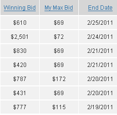

ページランク５のドメインの相場
ページランクが３や４の場合、ドロップキャッチでも取得することが可能ですが、５～７ともなると、数万～数十万円程度の出費を覚悟しないと取得するのは難しい気がします。
ドメインひとつに数万円も出費するのはいかがなものかという気もしますが、アフィリエイトサイトひとつで、小さな家が一軒建つという可能性もあるわけです。
そのようなことを考えると、案外、数万円程度で優良なドメインをゲットできるというのは安いという気もするのです。
このような考えから、最近はオークションサイトでめぼしいドメインをちらほらと物色しているわけですが、５の場合は５万円程度、６以上になると数十万円程度での落札価格が相場のようです。

私の感覚のなかでは、だいたい１万円程度、どんだけつっこんでも３万円程度がぶなんな線という感覚がありまして、それが邪魔をしてすべて落札できずという結果に終わっています。
やはり、元をただせば1000円で取得できるものなわけですので、今一歩、大きく踏み出せないわけです。
ただ、失敗を恐れずに一歩を踏み出して、数万円をかけて取得したドメインが、実はむなしいものだった...というケースも多々あるものです。
また、一度高額なドメインの取得に踏み出したら、あとは次々にエスカレートしていくのがオークションの常です。
高ページランクのドメインは魔物の１種ともいえるのです。
普通にブログを更新していたら、多額の収益が発生していたものを、そのすべてをドメインにつぎ込んでしまった...という人も多いのではないでしょうか。
そのような意味でも、私はあえて無料ブログで作ることをおすすめします。
ブログ比較をしてみると、無料で作れるレンタルサービスもたくさんあり、独自ドメインで作成するよりもかえってSEO対策的に有利ということも多いものです。